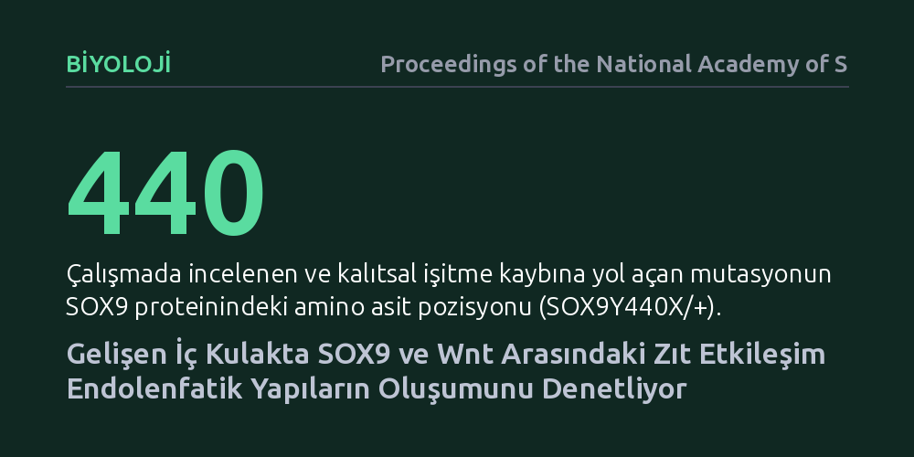

BIYOLOJI · Proceedings of the National Academy of Sciences · 2026-10-20
Araştırmacılar, iç kulak gelişiminde işitme ve dengeyi sağlayan hücrelerin nasıl belirlendiğini inceledi. Fare genetiği ve insan organoidleriyle yapılan çalışma, SOX9 ile Wnt sinyallerinin zıt çalışarak SOX10 aracılığıyla endolenfatik gelişimi kontrol ettiğini ortaya koydu.
İşitme ve denge kaybına yol açan genetik bozuklukların altında yatan temel moleküler mekanizmayı aydınlatıyor.

İç kulak yalnızca ses dalgalarını algılamamızı değil, üç boyutlu uzayda yerçekimine karşı dengede kalmamızı da sağlayan son derece hassas bir organdır. Bu karmaşık sistemin embriyonik gelişim sırasında kusursuz biçimde inşa edilmesi, iç kulak keseciği adı verilen ilkel yapının doğru sinyallerle biçimlenmesine ve sıvı dengesini koruyan endolenfatik kanalların sağlıklı oluşmasına bağlıdır. Ancak henüz gelişimin en başındayken hücrelerin hangi moleküler komutları izleyerek bu kritik yapıları oluşturduğu uzun süredir tam olarak aydınlatılamamıştı.
Özellikle doğuştan gelen bazı işitme ve denge kayıplarının belirli genetik mutasyonlarla ilişkili olduğu bilinse de bu genlerin gelişim sürecinde birbirleriyle nasıl etkileştiği sorusu yanıtsız duruyordu. Bilim insanları, hücrelerin kaderini belirleyen anahtar genetik devrelerin hangi sırayla ve nasıl bir denge içinde devreye girdiğini tespit etmeyi hedefledi.
Araştırmacılar, iç kulak keseciğindeki hücresel dönüşümü izlemek için hem canlı organizma hem de laboratuvarda geliştirilen gelişmiş hücresel modelleri bir arada kullandı. İlk aşamada, insanlarda işitme kaybına yol açtığı bilinen SOX9 gen mutasyonunu (SOX9Y440X/+) taşıyan fare modelleri oluşturularak gelişimsel bozuklukların canlı bir memelideki seyri adım adım gözlemlendi.
Elde edilen bulguların insan biyolojisinde de geçerli olup olmadığını doğrudan sınamak için kök hücrelerden laboratuvarda üç boyutlu insan iç kulak organoidleri üretildi. Bu minyatür doku modelleri üzerinde yapılan hedefe yönelik moleküler müdahaleler, iç kulak gelişimindeki sinyal yollarının canlı insan dokusunu taklit eden bir ortamda incelenmesine olanak tanıdı.
Yapılan analizler, iç kulak keseciğinde hücrelerin doğru görevlere yönelmesini sağlayan ve evrimsel olarak korunan bir 'SOX9–Wnt–SOX10' devresinin varlığını ortaya çıkardı. Bulgulara göre SOX9 proteini ile hücreler arası iletişimi yöneten Wnt sinyal yolu birbirine zıt şekilde çalışarak doku içinde hassas bir denge alanı oluşturuyor.
Bu zıt etkileşimin doğrudan sonucu olarak SOX10 geninin etkinliği kontrol altına alınıyor. SOX10 kontrolünün sağlıklı işlemesi, işitme ve denge için vazgeçilmez olan endolenfatik kesenin ve kanal hücrelerinin doğru zamanda gelişmesini sağlıyor. SOX9 mutasyonu meydana geldiğinde ise bu sinyal dengesi bozularak endolenfatik yapının kusurlu gelişmesine yol açıyor.
Elde edilen sonuçlar, kalıtsal işitme ve denge kayıplarının kökeninde gelişimsel bir sinyal dengesizliği yattığını kanıtlıyor. Mekanizmanın hem fare modellerinde hem de insan kök hücre organoidlerinde tutarlı biçimde doğrulanmış olması, iç kulak biyolojisinin temel bir kuralını aydınlatıyor.
Bu çalışma anında bir tedavi sunmasa da gelecekteki kök hücre tedavileri ve genetik müdahaleler için kritik bir yol haritası çiziyor. Laboratuvarda işitme hücreleri üretmeye çalışan araştırmacılar, artık hücrelerin doğru dokuya dönüşebilmesi için SOX9, Wnt ve SOX10 dengesini nasıl yönlendirmeleri gerektiğini daha net bir şekilde görebiliyor.